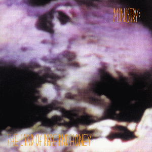

- ALBUM OF THE WEEK -
"The Land of Rape and Honey" by Ministry

Release Date: October 11, 1988
Genre: Industrial Metal
Length: 46:31
- TRACK LISTING -
#1 - Stigmata
#2 - The Missing
#3 - Deity
#4 - Golden Dawn
#5 - Destruction
#6 - Hizbollah
#7 - The Land of Rape and Honey
#8 - You Know What You Are
#9 - I Prefer
#10 - Flashback
#11 - Abortive
Favourite Track: #9 - I Prefer
Rating: 8.5/10